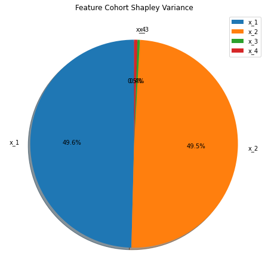

Cohort Shapley Variance
[19]:
import numpy as np
import matplotlib.pyplot as plt
import config
import sloth
%matplotlib inline
%load_ext autoreload
%autoreload 2
The autoreload extension is already loaded. To reload it, use:
%reload_ext autoreload
[14]:
# get a sample validation task from a synthetic credit default model
validation_task = sloth.datasets.test_sets.simple_regression_ordinal_discrete_ohe(n_samples=100_000, x=0, f=0)
cohort_shap_variance = sloth.explainers.global_explainers.CohortShapleyVariance(validation_task, similarity_bins=200)
[15]:
csv_explanation = cohort_shap_variance.explain()
[13]:
csv_explanation.df()
[13]:
| feature | shapley_variance | shapley_variance_relative | |
|---|---|---|---|
| 0 | x_1 | 0.055075 | 0.495847 |
| 1 | x_2 | 0.055008 | 0.495236 |
| 2 | x_3 | 0.000423 | 0.003804 |
| 3 | x_4 | 0.000568 | 0.005114 |
[22]:
plt.figure(figsize=(8,8))
csv_explanation.plot()

[ ]: